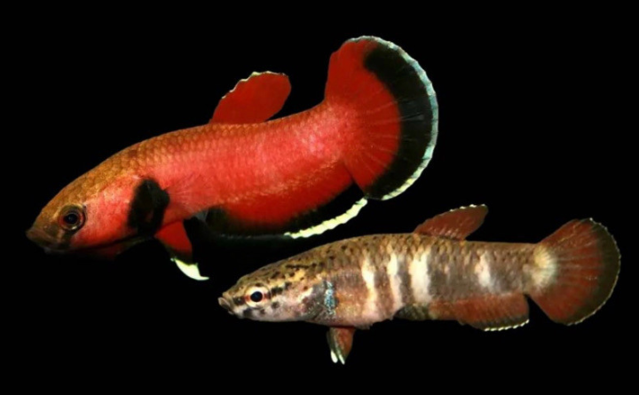

Systématique
- Ordre : Anabantiformes
- Famille : Osphronemidae
- Genre : Betta
- Espèce : Betta channoides
- Descripteur : Kottelat & Ng, 1994
- Groupe : Complexe Albimarginata

Betta channoides, le combattant à tête de serpent, est un petit Betta atypique et rare endémique du bassin de la rivière Mahakam en Kalimantan oriental, sur l'île de Bornéo (Indonésie). Il s'agit de l'une des plus petites espèces du genre, ne dépassant guère 4 à 5 cm en longueur.
Contrairement au poisson combattant classique (Betta splendens), cette espèce ne construit pas de nid de bulles en surface, ne vit pas en surface et n'est pas belliqueux. C'est un incubateur buccal et une espèce grégaire vivant près du substrat, avec un comportement nettement plus pacifique.
Le mâle adulte présente une coloration rouge écarlate à rouge brique très intense, avec une tête robuste caractéristique ressemblant à celle d'un bulldogue. L'opercule affiche une teinte noire distinctive. Les nageoires dorsale et anale sont bordées de blanc, tandis que la caudale est rouge écarlate avec une fine bande distale blanche. Les femelles sont nettement moins colorées et beaucoup moins attrayantes que les mâles.
Betta channoides est une espèce paisible et timide, se comportant très différemment des bettas agressifs. L'espèce est naturellement grégaire et peut être maintenue en groupe ou en couple avec succès lorsque l'aquarium est correctement aménagé.
Le mâle dominant d'un groupe affichera ses plus belles couleurs, tandis que les autres mâles resteront moins colorés (phénomène d'hiérarchie sociale). Bien que quelques chamailleries soient inévitables entre mâles, l'espèce est généralement pacifique et compatible avec d'autres petites espèces paisibles.
Attention : à éviter avec les poissons de fond (risque de prédation) ou les espèces trop petites (< 1,2 cm). Compatibles avec Boraras, Rasbora ou Trigonostigma. Un layout bien pensé avec de nombreuses cachettes et éléments de décoration brisent la ligne de mire et réduisent les tensions naturelles.
Mode : incubateur buccal paternel; l'espèce n'est pas monogame mais polygame, ce qui permet de maintenir un trio-harem (2 mâles + 1 femelle) ou plus en group.
Après la ponte, le mâle incube les œufs dans sa bouche pendant une période de 10 à 16 jours selon la température. Une fois en possession des œufs, le mâle doit être séparé des autres poissons pour éviter le cannibalisme.
Conditions de reproduction : un couvercle très étanche (ou film alimentaire) est essentiel, car les alevins doivent accéder à une couche d'air chaud et humide sans laquelle le développement de l'organe labyrinthe sera compromis. Les aliments vivants (daphnies, cyclops, larves de moustique) favorisent grandement la reproduction naturelle.
Dimorphisme sexuel : le mâle est beaucoup plus coloré avec une tête extrêmement robuste et massive, tandis que la femelle est plus terne, plus trapue avec un ventre arrondi et une présentation générale moins imposante.
Espérance de vie : environ 2 à 3 ans en captivité, typique des petites espèces de Betta.
Betta channoides fréquente naturellement les ruisseaux forestiers avec des eaux acides, brunes et peu profondes, caractérisées par une eau très douce riche en tanins (eau de couleur thé). L'habitat comprend des feuilles mortes, des racines de plantes et peu ou pas de végétation aquatique à l'exception des mousses. Le substrat contient des oxydes de fer qui rougissent tout l'environnement. Les différentes localités produisent des lignées pures distinctes, dont la plus prisée provient du village de Pampang.
Répartition

Origine naturelle :
- Bassin de la rivière Mahakam, Kalimantan Timur (Kalimantan oriental), Bornéo, Indonésie.
- Zones de Mujup, Sungai Merimun, Muarapahu et Pampang.
- Espèce endémique et rare.
Betta channoides possède une aire de distribution très restreinte et fragmentée. L'espèce est rare à très rare en milieu naturel et en aquariophilie. Les collectionneurs maintiennent souvent les lignées pures selon leur localité d'origine pour préserver la génétique régionale.
Paramètres de maintenance
Température : 21 à 28 °C, optimale autour de 25 °C pour la maintenance; 26 °C pour la reproduction.
pH : 5,0 à 6,5, eau acide à légèrement acide.
GH : 1 à 5 °dGH (eau très douce, proche de 0 en milieu naturel).
Volume conseillé : minimum 30 L pour un couple ou trio-harem; 80 cm de façade pour un groupe de 6 poissons (4 mâles + 2 femelles).
Courant : faible à modéré; pas de trop forte filtration.
Décoration : nombreuses cachettes, hardscape (racines, bois flotté, pots), feuilles mortes, peu ou pas de plantes aquatiques.
Régime alimentaire
Régime : insectivore miniature; dans la nature, se nourrit de petits insectes aquatiques et zooplancton divers.
En aquarium, préfère largement les aliments frais ou surgelés aux aliments secs (flocons, granulés) qu'il tolérera difficilement. Les aliments vivants (daphnies, artémias, larves de moustique, cyclops) sont fortement recommandés pour son bien-être et favorisent les plus belles couleurs et la reproduction.
Important : ne pas suralimenter, car l'espèce est sujette à l'obésité. Excès d'artémias à proscrire, surtout chez les jeunes. Une alimentation variée est essentielle pour cette espèce délicate.